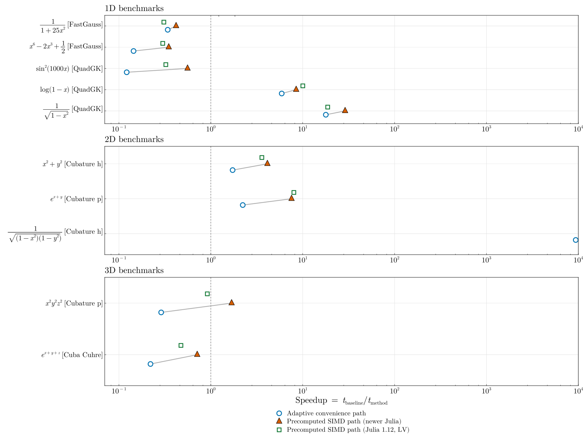

Benchmarks
This benchmark suite is accuracy-targeted, not a fixed-node-count race. Every method is timed against a common accuracy target, and methods that do not meet that target are marked explicitly.
Cross-library comparisons include:
FastTanhSinhQuadrature.jlQuadGK.jlHCubature.jlCubature.jl(handpvariants)Cuba.jl(Vegas,Divonne,Cuhre, for >1D)FastGaussQuadrature.jl(1D only)
How to Read This Page
- Adaptive libraries are run with the same
rtol/atoltargets. - For each test case, we infer an
Nfrom the level whereFTS adaptivesatisfies the stopping criterion. FTS avxis benchmarked at that adaptive-matchedN.- In the summary figure, the SIMD path is shown for both newer Julia (where
@turbocan degrade to a fallback) and Julia 1.12 (whereLoopVectorizationis active), so the version effect is visible. FastGauss(1D) is calibrated independently to the same tolerance target.- The table therefore reports adaptive tolerance-based runs plus fixed-grid comparisons where each method uses its own convergence path.
- Methods marked with
*did not meet the requested target within the candidate node list or evaluation budget.
If you are deciding whether to use this package, the most important distinction is usually the problem class:
- For endpoint singularities or repeated integrations with pre-computed nodes, Tanh-Sinh can be extremely effective.
- For ordinary smooth 1D problems, especially oscillatory ones,
QuadGK.jlis often the better default.
Methodology
- Domain: case-dependent (most tests use
[-1,1]^d; oscillatory 1D test uses[-π,π]) - Tolerances:
rtol = 1e-6,atol = 1e-8 - Same target is used across libraries:
quad/adaptive_integrate_*/QuadGK/HCubature/Cubausertol+atol,Cubature.jlusesreltol+abstolset to the same values, andFastGaussis calibrated to satisfy the same target in terms of actual error. - Max evaluations (external adaptive solvers):
200000 - Timing:
@belapsedwith interpolation (samples=3,evals=1) - One warm call is executed before each timed benchmark.
- Adaptive cache construction is excluded from timed regions (prebuilt caches).
For this package we benchmark:
adaptive_integrate_*typed calls (minimal-dispatch adaptive path),quadconvenience calls,- precomputed-node
_avxcalls at theNinferred from adaptive convergence.
The raw benchmark outputs also include absolute and relative errors:
Raw output files are generated at:
benchmark/results/timings.csvbenchmark/results/timings_full.mdbenchmark/results/timings_summary.md
Timing Table at Fixed Accuracy Target
| Dim | Function | FTS adaptive | FTS quad | FTS avx | QuadGK | HCubature | Cubature h | Cubature p | Cuba Vegas | Cuba Divonne | Cuba Cuhre | FastGauss |
|---|---|---|---|---|---|---|---|---|---|---|---|---|
| 1D | 1/(1+25x^2) | 711.0000 | 694.0000 | 387.0000 | 545.0000 | 1.551e+04 | 1.238e+04 | 1.492e+04 | n/a | n/a | n/a | 113.0000 |
| 1D | 1/sqrt(1-x^2) | 597.0000 | 453.0000 | 309.0000 | 7351.0000 | 2.061e+05 | 2.839e+05 | 1164.0000 * | n/a | n/a | n/a | 1.294e+04 * |
| 1D | log(1-x) | 1180.0000 | 531.0000 | 403.0000 | 3932.0000 | 5.093e+04 | 6.568e+04 | 1437.0000 * | n/a | n/a | n/a | 1.199e+04 |
| 1D | sin^2(1000x) | 1.548e+05 | 2.860e+05 | 2.855e+04 | 1.020e+04 | 1.014e+05 | 9.308e+04 | 1089.0000 * | n/a | n/a | n/a | 3.402e+04 |
| 1D | x^6 - 2x^3 + 0.5 | 1065.0000 | 608.0000 | 372.0000 | 436.0000 | 4320.0000 | 2215.0000 | 3752.0000 | n/a | n/a | n/a | 72.0000 |
| 2D | 1/sqrt((1-x^2)(1-y^2)) | 2612.0000 | 2796.0000 | 1840.0000 | n/a | 5.560e+07 | 2.611e+07 | 1972.0000 * | 7.539e+07 * | 9.310e+07 * | 7.375e+07 * | n/a |
| 2D | exp(x+y) | 1.653e+04 | 1.786e+04 | 5241.0000 | n/a | 1.254e+05 | 4.318e+04 | 3.683e+04 | 8.878e+07 * | 8.181e+07 | 6.532e+04 | n/a |
| 2D | x^2 + y^2 | 2612.0000 | 3541.0000 | 1100.0000 | n/a | 5709.0000 | 2222.0000 | 5633.0000 | 8.446e+07 * | 7.947e+07 | 5.554e+04 | n/a |
| 3D | 1/sqrt((1-x^2)(1-y^2)(1-z^2)) | 8.183e+04 | 8.129e+04 | 1.902e+05 | n/a | 3.347e+07 * | 2.373e+07 * | 4049.0000 * | 1.314e+08 * | 1.257e+08 * | 1.130e+08 * | n/a |
| 3D | exp(x+y+z) | 9.342e+05 | 9.459e+05 | 9.456e+05 | n/a | 3.523e+05 | 2.684e+05 | 6.155e+05 | 1.156e+08 * | 1.219e+08 * | 1.385e+05 | n/a |
| 3D | x^2y^2z^2 | 5.733e+04 | 5.860e+04 | 1.158e+04 | n/a | 1.086e+07 | 7.414e+06 | 2.071e+04 | 1.198e+08 * | 1.293e+08 * | 3.862e+07 | n/a |
* indicates the method did not meet the requested tolerance on that case. FTS avx uses the N inferred from adaptive FTS convergence. FastGauss (1D) uses its own minimal N that meets tolerance (if found).
Benchmark Summary Figure
This summary shows speedup of FTS quad and FTS avx relative to the fastest accurate competing method on each benchmark case. It also overlays FTS avx from Julia 1.12 (LoopVectorization-active) as a separate marker so the version-dependent SIMD behavior is explicit. Values greater than 1 indicate faster performance.

Running Benchmarks
julia --project=benchmark benchmark/benchmarks.jl